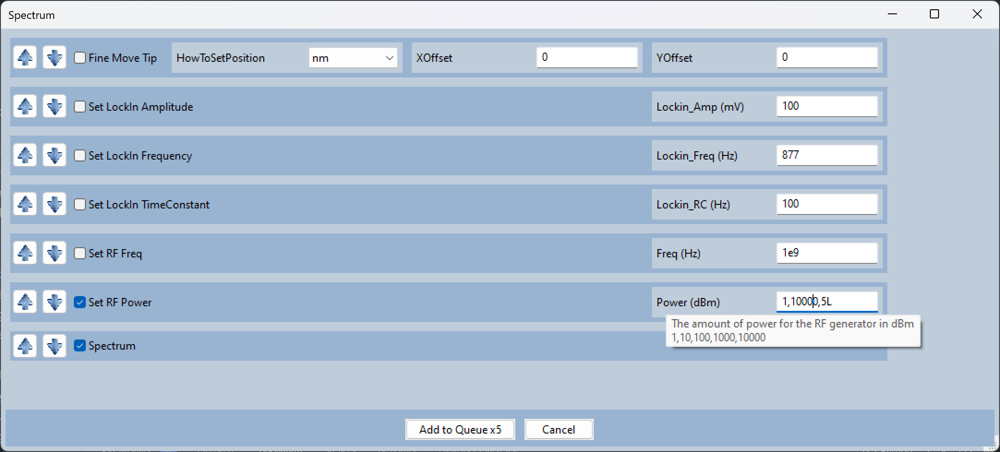
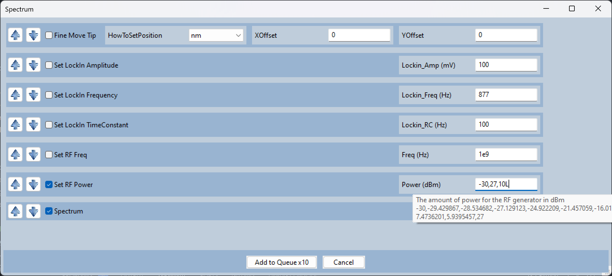

Logarithmically Spaced Parameters
You can expand on a logscale by placing an ‘L’ or ‘l’ at the end.
This is useful if you have an instrument, like an RF generator, that uses logarithmic units (dBm).
The format is ‘{Start}, {End}, {N Points}L’.
e.g. 1,10000,5L is equivalent to 1,10,100,1000,10000.
Start and End can be any number. It doesn’t have to evenly go into integers:
